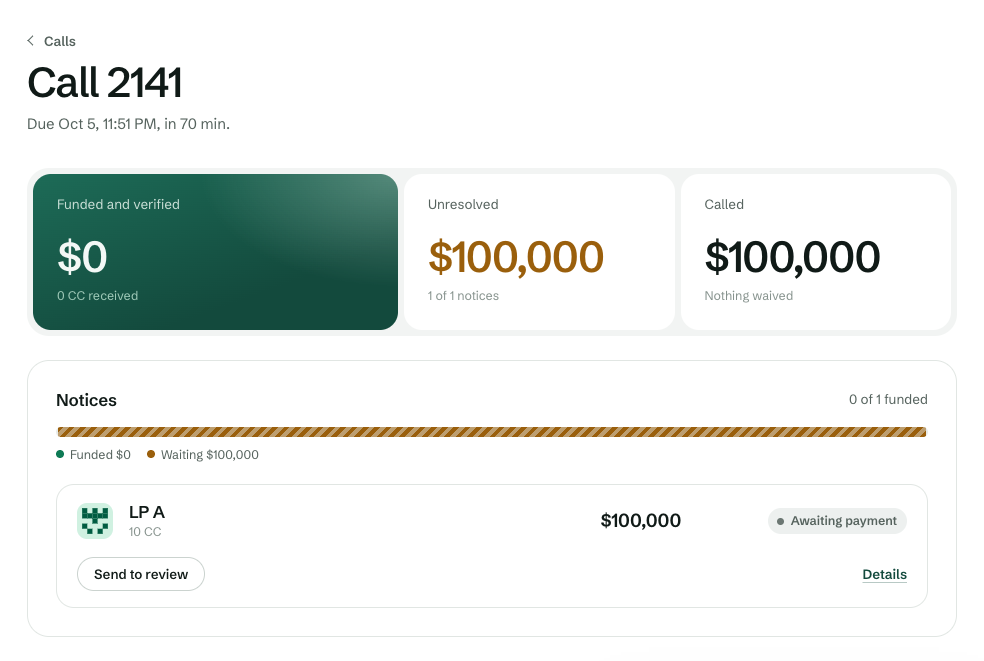
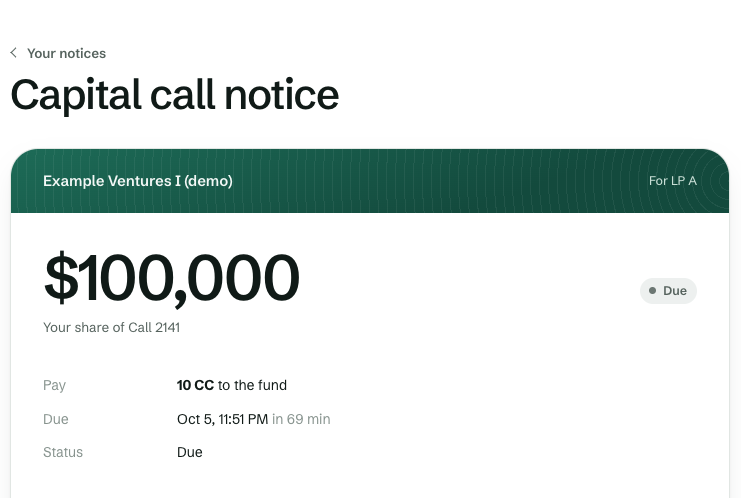
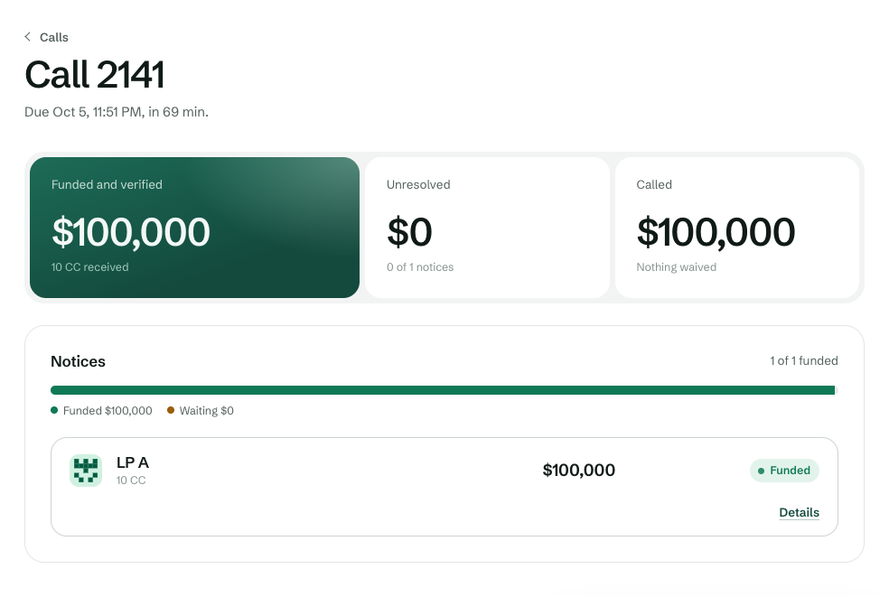

DevNet
It runs on DevNet today.
The deployed app in a real browser, against the HackCanton node, where its latest journey passed 10 of 10 steps.
DevNet, HackCanton shared node. DRAW’s backend login signs for every demo seat, and a different login reads each settlement back.
Settles in Canton Coin from the DevNet faucet. Dollar figures are the scenario.
drawcalls.xyz
Have a HackCanton login? An LP can join as itself, read its notices with its own token, and pay with Accept in its own Canton Coin wallet. DRAW never gets the token. Every run used the team’s own login as the LP.



